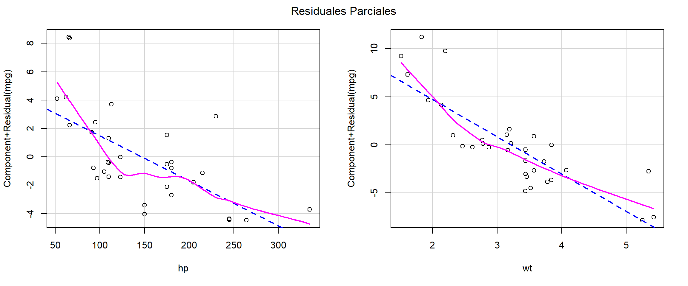

| Velocidad (mph) | Distancia de frenado (ft) |
|---|---|
| 4 | 2 |
| 4 | 10 |
| 7 | 4 |
| 7 | 22 |
| 8 | 16 |
| 9 | 10 |
| 10 | 18 |
| 10 | 26 |
| 10 | 34 |
| 11 | 17 |
| 11 | 28 |
| 12 | 14 |
| 12 | 20 |
| 12 | 24 |
| 12 | 28 |
XS-0122 Fundamentos de Teoría Estadística - I Semestre 2026
La idea general consiste en predecir una variable \(Y\) cuantitativa por medio de una covariable \(X\) (variable predictora) también cuantitativa por medio de una recta.
Aunque en un inicio puede parecer un enfoque sencillo, sienta las bases para métodos más complejos.
Se asume que en la población existe una relación lineal entre la variable respuesta \(Y_i\) y la covariable \(X_i\):
\[Y_i = \beta_0 + \beta_1 X_i + \varepsilon_i, \quad \text{donde } \varepsilon_i \overset{i.i.d.}{\sim} N(0, \sigma^2)\]
Donde
Para una muestra aleatoria de tamaño \(n\) dada por \(\{(X_1, Y_1), (X_2, Y_2), \dots, (X_n, Y_n)\}\), el modelo estimado (usando Mínimos Cuadrados Ordinarios) se expresa como:
\[\hat{Y}_i = \hat{\beta_0} + \hat{\beta_1} X_i\]
o
\[Y_i = \hat{\beta_0} + \hat{\beta_1} X_{1} +e_i\]
Donde \(e_i = Y_i - \hat{Y}_i\) es el residuo observable, el cual actúa como la estimación muestral del error poblacional \(\varepsilon_i\).
Comprensión del Error
El error captura todo aquello que altera a \(Y\) y que no es explicado por \(X\) (variables omitidas, ruido de medición, aleatoriedad intrínseca).
Para hallar los estimadores del modelo \(\beta_0, \beta_1\) (mediante mínimos cuadrados), se busca aquellos coeficientes que minimicen el error, esto se hace minimizando la suma de cuadrados de los residuos:
\[SCR = \sum_{i=1}^n(Y_i - \hat{Y}_i)^2 = \sum_{i=1}^n (Y_i - \beta_0 - \beta_1 X_i)^2\]
Derivando parcialmente e igualando a cero obtenemos las ecuaciones:
\[\frac{\partial SCR}{\partial B_0}= -2\sum_{i=1}^n (Y_i - \beta_0 - \beta_1 X_i) = 0\]
\[\Rightarrow \sum_{i=1}^n Y_i - n\beta_0 - \beta_1 \sum_{i=1}^nX_i=0\]
\[\Rightarrow \hat{\beta_0} = \hat{Y} - \hat{\beta_1} \hat{X}\]
\[\frac{\partial SCR}{\partial B_1}= -2\sum_{i=1}^n (Y_i - \beta_0 - \beta_1 X_i)\cdot X_i = 0\]
\[\Rightarrow \sum_{i=1}^n Y_iX_i - \beta_0\sum_{i=1}^nX_i - \beta_1 \sum_{i=1}^nX_i^2 = 0\]
\[\Rightarrow \sum_{i=1}^n X_i Y_i - (\bar{Y} - \hat{\beta}_1 \bar{X})(n\bar{X}) - \hat{\beta}_1 \sum_{i=1}^n X_i^2 = 0 \]
\[\Rightarrow \hat{\beta}_1 = \frac{\sum_{i=1}^n X_i Y_i - n\bar{X}\bar{Y}}{\sum_{i=1}^n X_i^2 - n\bar{X}^2}\]
\[\hat{\beta}_1 = \frac{\sum_{i=1}^n (X_i - \bar{X})(Y_i - \bar{Y})}{\sum_{i=1}^n (X_i - \bar{X})^2} = \frac{\text{Covarianza(X,Y)}}{\text{Varianza(X)}}\]
Los estimadores \(\hat{\beta}_0\) y \(\hat{\beta}_1\) son los estimadores lineales insesgados de mínima varianza (ELIM / MVUE) bajo los supuestos clásicos de Gauss-Markov.
carsEl conjunto de datos “Cars” muestran la velocidad de los automóviles y las distancias necesarias para que los carros de detengan (este conjunto de datos fue recolectado en 1920).
| Velocidad (mph) | Distancia de frenado (ft) |
|---|---|
| 4 | 2 |
| 4 | 10 |
| 7 | 4 |
| 7 | 22 |
| 8 | 16 |
| 9 | 10 |
| 10 | 18 |
| 10 | 26 |
| 10 | 34 |
| 11 | 17 |
| 11 | 28 |
| 12 | 14 |
| 12 | 20 |
| 12 | 24 |
| 12 | 28 |
carslibrary(plotly)
# Modelo
regresion_simple <- lm(dist ~ speed, data = cars)
cars$prediccion <- predict(regresion_simple)
# Gráfico
plot_ly(data = cars, height = 500) %>%
#Agregar residuales
add_segments(x = ~speed, xend = ~speed, y = ~dist, yend = ~prediccion,
line = list(color = "red", dash = "dash"),
name = "Residuos", hoverinfo = "none") %>%
#Puntos Observados
add_markers(x = ~speed, y = ~dist,
marker = list(color = "darkgray", size = 8),
name = "Observaciones") %>%
#Recta
add_lines(x = ~speed, y = ~prediccion,
line = list(color = "blue", width = 3),
name = "Recta MCO") %>%
#Diseño
layout(title = "Regresión Lineal Simple",
xaxis = list(title = "Velocidad (mph)"),
yaxis = list(title = "Distancia (ft)"),
showlegend = TRUE,
hovermode = "closest",
autosize = TRUE)cars
Call:
lm(formula = dist ~ speed, data = cars)
Residuals:
Min 1Q Median 3Q Max
-29.069 -9.525 -2.272 9.215 43.201
Coefficients:
Estimate Std. Error t value Pr(>|t|)
(Intercept) -17.5791 6.7584 -2.601 0.0123 *
speed 3.9324 0.4155 9.464 1.49e-12 ***
---
Signif. codes: 0 '***' 0.001 '**' 0.01 '*' 0.05 '.' 0.1 ' ' 1
Residual standard error: 15.38 on 48 degrees of freedom
Multiple R-squared: 0.6511, Adjusted R-squared: 0.6438
F-statistic: 89.57 on 1 and 48 DF, p-value: 1.49e-12Interpretación:
\(\hat{\beta}_0\): Si la velocidad del auto es nula, la distancia estimada para detenerse es de -17.57 pies (en algunos casos carece de sentido lógico).
\(\hat{\beta}_1\): Por cada aumento de 1 mph en la velocidad del auto, se requerirán en promedio 3.93 pies adicionales para detenerse.
En la práctica usualmente tenemos más de una covariable \(\small X_1, X_2, \cdots, X_p\), por ende generalizamos el resultado anterior para \(p\) covariables es decir, para una muestra aleatoria de tamaño \(n\) dada por \(\tiny \{(X_{1,1},X_{1,2},\cdots,X_{1,p}, Y_1), (X_{2,1},X_{2,2},\cdots,X_{2,p}, Y_2), \dots, (X_{n,1},X_{n,2},\cdots,X_{n,p}, Y_n)\}\), el modelo muestral estimado (usando Mínimos Cuadrados Ordinarios) se expresa como:
\[\hat{Y}_i = \hat{\beta_0} + \hat{\beta_1} X_{i,1} + \hat{\beta_2} X_{i,2}+\cdots+\hat{\beta_p} X_{i,p}\]
o
\[Y_i = \hat{\beta_0} + \hat{\beta_1} X_{i,1} + \hat{\beta_2} X_{i,2}+\cdots+\hat{\beta_p} X_{i,p}+e_i\]
Donde \(e_i = Y_i - \hat{Y}_i\) es el residuo observable, el cual actúa como la estimación muestral del error poblacional \(\varepsilon_i\).
Desde un enfoque matricial esta ecuación puede verse como:
\[\mathbf{Y} = \mathbf{X}\hat{\boldsymbol{\beta}} + \mathbf{e}\]
(Data set mtcars): Los datos fueron extraídos de la revista estadounidense Motor Trend de 1974, y comprenden el consumo de combustible y 10 aspectos del diseño y rendimiento automotriz para 32 automóviles (modelos de 1973–74). Para efectos de la presentación solo se tomaron las variables mpg (Rendimiento), hp (Potencia), wt (Peso).
| Y = Rendimiento (mpg) | X1 = Potencia (hp) | X2 = Peso (1000 lbs) | |
|---|---|---|---|
| Mazda RX4 | 21.0 | 110 | 16.46 |
| Mazda RX4 Wag | 21.0 | 110 | 17.02 |
| Datsun 710 | 22.8 | 93 | 18.61 |
| Hornet 4 Drive | 21.4 | 110 | 19.44 |
| Hornet Sportabout | 18.7 | 175 | 17.02 |
| Valiant | 18.1 | 105 | 20.22 |
| Duster 360 | 14.3 | 245 | 15.84 |
| Merc 240D | 24.4 | 62 | 20.00 |
| Merc 230 | 22.8 | 95 | 22.90 |
| Merc 280 | 19.2 | 123 | 18.30 |
| Merc 280C | 17.8 | 123 | 18.90 |
| Merc 450SE | 16.4 | 180 | 17.40 |
| Merc 450SL | 17.3 | 180 | 17.60 |
| Merc 450SLC | 15.2 | 180 | 18.00 |
| Cadillac Fleetwood | 10.4 | 205 | 17.98 |
\[\mathbf{\hat{Y}} = \mathbf{X}\hat{\boldsymbol{\beta}} + \mathbf{e}\]
\[\underbrace{ \begin{bmatrix} y_1 \\ y_2 \\ \vdots \\ y_n \end{bmatrix} }_{\mathbf{Y}_{(n \times 1)}} = \underbrace{ \begin{bmatrix} 1 & x_{1,1} & x_{1,2} & \cdots & x_{1,p} \\ 1 & x_{2,1} & x_{2,2} & \cdots & x_{2,p} \\ \vdots & \vdots & \vdots & \ddots & \vdots \\ 1 & x_{n,1} & x_{n,2} & \cdots & x_{n,p} \end{bmatrix} }_{\mathbf{X}_{n \times (p+1)}} \underbrace{ \begin{bmatrix} \hat{\beta}_0 \\ \hat{\beta}_1 \\ \hat{\beta}_2 \\ \vdots \\ \hat{\beta}_p \end{bmatrix} }_{\boldsymbol{\hat{\beta}}_{(p+1) \times 1}} + \underbrace{ \begin{bmatrix} e_1 \\ e_2 \\ \vdots \\ e_n \end{bmatrix} }_{\boldsymbol{e}_{(n \times 1)}}\]
De manera análoga la idea es encontrar el vector \(\hat{\boldsymbol{\beta}}\) que minimiza la suma de cuadrados residual.
\[SCR = \sum_{i=1}^n(Y_i - \hat{Y}_i)^2 = \sum_{i=1}^n(Y_i - \sum_{j=1}^pX_{i,j}\beta_j)^2 \]
Se puede demostrar que
\[SCR = (\mathbf{Y} - \mathbf{X}\boldsymbol{\beta})^t(\mathbf{Y} - \mathbf{X}\boldsymbol{\beta})\]
\[\Rightarrow \frac{\partial SCR}{\partial \boldsymbol{\beta}} = -2\mathbf{X}^t(\mathbf{Y}-\mathbf{X}\boldsymbol{\beta}) = 0\]
\[\Rightarrow \frac{\partial SCR}{\partial \boldsymbol{\beta}} = \mathbf{X}^t(\mathbf{Y}-\mathbf{X}\boldsymbol{\beta}) = 0\]
\[ \boldsymbol{\hat{\beta}} = (\mathbf{X}^t\mathbf{X})^{-1}\mathbf{X}^t\mathbf{Y}\]
En el paradigma geométrico de los modelos lineales, no observamos variables aisladas, sino vectores en un espacio de alta dimensionalidad.
En el espacio de las variables \(\mathbb{R}^n\) están las columnas de la matriz de diseño \(X\), denotadas por:
\[X_1, X_2, \dots, X_p\]
También están en este mismo espacio vectorial:
El vector de respuestas observadas \(\mathbf{Y}\).
El vector de errores \(\mathbf{e}\)
Encontrar los parámetros \(\beta_1, \beta_2, \dots, \beta_m\) de tal manera que la suma de cuadrados residual sea mínima es equivalente a proyectar ortogonalmente el vector \(Y\) sobre el espacio generado por \(X_1, X_2, \dots, X_p\).
\[\mathcal{B} = \{X_1, X_2, \dots, X_p\} \mapsto \{v_1, v_2, \dots, v_p\} \text{ ortonormal}\]
\[ X\beta = \langle Y, v_1 \rangle v_1 + \langle Y, v_2 \rangle v_2 + \dots + \langle Y, v_m \rangle v_m\]
\[ X\hat{\beta} = X(X^t X)^{-1} X^t Y\]
library(plotly)
# Coordenadas conceptuales para replicar la imagen
orig <- c(0,0,0)
x1 <- c(5, 1, 0)
x2 <- c(1, 4, 0)
y_real <- c(4, 3, 5) # Vector Y (Rojo)
y_hat <- c(4, 3, 0) # Vector proyección (plano Z=0)
plot_ly() %>%
# 1. El hiperplano generado por X1 y X2 (Amarillo, Z=0)
add_trace(type = "mesh3d",
x = c(0, 6, 6, 0),
y = c(0, 0, 5, 5),
z = c(0, 0, 0, 0),
i = c(0, 0), j = c(1, 2), k = c(2, 3),
opacity = 0.5, color = I("yellow"), name = "Espacio Col(X)", hoverinfo="none") %>%
# 2. Vector Y (Rojo, hacia arriba)
add_paths(x = c(orig[1], y_real[1]), y = c(orig[2], y_real[2]), z = c(orig[3], y_real[3]),
line = list(color = "red", width = 5), name = "Vector Y") %>%
# 3. Vector de proyección Y_hat (Azul en el plano)
add_paths(x = c(orig[1], y_hat[1]), y = c(orig[2], y_hat[2]), z = c(orig[3], y_hat[3]),
line = list(color = "blue", width = 4), name = "Proyección Y") %>%
# 4. Error ortogonal (Línea roja punteada)
add_paths(x = c(y_hat[1], y_real[1]), y = c(y_hat[2], y_real[2]), z = c(y_hat[3], y_real[3]),
line = list(color = "red", dash = "dash", width = 4), name = "Error (e)") %>%
# 5. Vectores de la base X1 y X2 (Negros en el plano)
add_paths(x = c(orig[1], x1[1]), y = c(orig[2], x1[2]), z = c(orig[3], x1[3]),
line = list(color = "black", width = 3), name = "X1") %>%
add_paths(x = c(orig[1], x2[1]), y = c(orig[2], x2[2]), z = c(orig[3], x2[3]),
line = list(color = "black", width = 3), name = "X2") %>%
# Añadir etiquetas de texto a los vectores
add_text(x = c(y_real[1], y_hat[1], x1[1], x2[1]),
y = c(y_real[2], y_hat[2], x1[2], x2[2]),
z = c(y_real[3]+0.5, y_hat[3]-0.5, x1[3], x2[3]),
text = c("Y", "Proyección", "X1", "X2"),
textfont = list(color = "black", size = 16), showlegend = FALSE) %>%
layout(scene = list(
xaxis = list(title = "", showgrid = FALSE, zeroline=FALSE, showticklabels=FALSE),
yaxis = list(title = "", showgrid = FALSE, zeroline=FALSE, showticklabels=FALSE),
zaxis = list(title = "", showgrid = FALSE, zeroline=FALSE, showticklabels=FALSE),
camera = list(eye = list(x = 1.5, y = -1.5, z = 0.5))
),
title = "Interpretación Geométrica",
margin = list(l=0, r=0, b=0, t=50))Es una medida de bondad de ajuste, que indica que tan bien ajusta el modelo a los datos utilizados para estimar los coeficientes.
\[R^2 = 1-\dfrac{SCR}{SCT}\]
donde \(SCT = \sum_{i=1}^n(Y_i-\bar{Y})^2\).
Esta medida se interpreta como la proporción de la varianza de la variable respuesta \(Y\) que está siendo explicada por las covariables y el modelo lineal utilizado.
#Modelo
modelo_multi <- lm(mpg~hp+wt, data=mtcars)
#Plano
eje_x <- seq(min(mtcars$hp), max(mtcars$hp), length.out = 20)
eje_y <- seq(min(mtcars$wt), max(mtcars$wt), length.out = 20)
plano_grid <- expand.grid(hp = eje_x, wt = eje_y)
plano_grid$mpg <- predict(modelo_multi, newdata = plano_grid) #Prediccion (hiperplano)
#Respuesta
matriz_z <- matrix(plano_grid$mpg, nrow = length(eje_x), ncol = length(eje_y))
# Ajustes
residuos_x <- c(rbind(mtcars$hp, mtcars$hp, NA))
residuos_y <- c(rbind(mtcars$wt, mtcars$wt, NA))
residuos_z <- c(rbind(mtcars$mpg, fitted(modelo_multi), NA))
#Grafico 3d
figura_3d <- plot_ly() %>%
#Agregar Hiperplano
add_surface(x = ~eje_x, y = ~eje_y, z = ~t(matriz_z),
opacity = 0.5, colorscale = "Blues", showscale = FALSE,
name = "Plano MCO") %>%
#Agregar los puntos
add_markers(x = ~mtcars$hp, y = ~mtcars$wt, z = ~mtcars$mpg,
marker = list(color = "black", size = 4),
name = "Observaciones") %>%
#Graficar los residuos
add_paths(x = ~residuos_x, y = ~residuos_y, z = ~residuos_z,
line = list(color = "red", dash = "dot", width = 3),
name = "Residuos") %>%
#Configurar los ejes
layout(
scene = list(
xaxis = list(title = "Potencia (hp)"),
yaxis = list(title = "Peso (wt)"),
zaxis = list(title = "Rendimiento (mpg)"),
camera = list(
eye = list(x = 1.75, y = -1.95, z = 1.15) # <-- Ángulo
)
),
title = "Regresión Múltiple"
)
# Mostrar figura
figura_3d
Call:
lm(formula = mpg ~ hp + wt, data = mtcars)
Residuals:
Min 1Q Median 3Q Max
-3.941 -1.600 -0.182 1.050 5.854
Coefficients:
Estimate Std. Error t value Pr(>|t|)
(Intercept) 37.22727 1.59879 23.285 < 2e-16 ***
hp -0.03177 0.00903 -3.519 0.00145 **
wt -3.87783 0.63273 -6.129 1.12e-06 ***
---
Signif. codes: 0 '***' 0.001 '**' 0.01 '*' 0.05 '.' 0.1 ' ' 1
Residual standard error: 2.593 on 29 degrees of freedom
Multiple R-squared: 0.8268, Adjusted R-squared: 0.8148
F-statistic: 69.21 on 2 and 29 DF, p-value: 9.109e-12Interpretación:
En el enfoque clásico existen supuestos que se deben cumplir:
Linealidad entre la variable respuesta y las covariables.
Normalidad de los errores \(\varepsilon_i \overset{i.i.d.}{\sim} N(0, \sigma^2)\).
Homocedasticidad, varianza constante \(\sigma^2\).
Ausencia de multicolinealidad (las covariables deben ser linealmente independientes), la correlacción entre las variables predictoras debe ser baja.
Indepedencia de las observaciones.
Normalidad
Homocedasticidad
Linealidad Y vs X

Se espera una relación lineal entre las covariables y los residuales parciales.
Multicolinealidad
Se espera que el factor de la inflación de la varianza (VIF) sea menor a 10, en caso contrario es un indicador de la existencia de multicolinealidad.
Independencia
En una regresión el supuesto de independencia está más relacionado al contexto y diseño de la investigación, por ejemplo observaciones medidas en el tiempo (mediciones del tipo de cambio), observaciones donde existe correlación espacial (mediciones de homidicios cantonales) incumplen por su naturaleza este supuesto e imposibilita el uso de la regresión. A su vez hay métodos para validar si por otras situaciones se presenta el incumplimiento de este supuesto.
Ahora consideremos la variable “am” (Transmisión), donde 0 = automático y 1 = manual.
Call:
lm(formula = mpg ~ hp + wt + am, data = mtcars)
Residuals:
Min 1Q Median 3Q Max
-3.4221 -1.7924 -0.3788 1.2249 5.5317
Coefficients:
Estimate Std. Error t value Pr(>|t|)
(Intercept) 34.002875 2.642659 12.867 2.82e-13 ***
hp -0.037479 0.009605 -3.902 0.000546 ***
wt -2.878575 0.904971 -3.181 0.003574 **
am1 2.083710 1.376420 1.514 0.141268
---
Signif. codes: 0 '***' 0.001 '**' 0.01 '*' 0.05 '.' 0.1 ' ' 1
Residual standard error: 2.538 on 28 degrees of freedom
Multiple R-squared: 0.8399, Adjusted R-squared: 0.8227
F-statistic: 48.96 on 3 and 28 DF, p-value: 2.908e-11El hiperplano de regresión es:
\[\hat{mpg} = 34.002 - 0.037 Potencia - 2.88Peso + 2.084I_{T=manual}\]
Interpretación del coeficiente de transmisición:
Esto en realidad implica la estimación de dos hiperplanos de manera conjunta.
#Malla
eje_hp <- seq(min(mtcars$hp), max(mtcars$hp), length.out = 20)
eje_wt <- seq(min(mtcars$wt), max(mtcars$wt), length.out = 20)
grid_base <- expand.grid(hp = eje_hp, wt = eje_wt)
#Predicciones
grid_auto <- grid_base
grid_auto$am <- as.factor(0) # Transmisión automática
z_auto <- matrix(predict(modelo_multi2, newdata = grid_auto),
nrow = length(eje_hp), ncol = length(eje_wt))
grid_manual <- grid_base
grid_manual$am <- as.factor(1) # Transmisión manual
z_manual <- matrix(predict(modelo_multi2, newdata = grid_manual),
nrow = length(eje_hp), ncol = length(eje_wt))
#Gráfico
plot_ly(height = 550) %>%
# Hiperplano para Transmisión Automática (am = 0) - Color Azul
add_surface(x = ~eje_hp, y = ~eje_wt, z = ~t(z_auto),
opacity = 0.4, colorscale = "Greens", showscale = FALSE,
name = "Auto (am=0)") %>%
# Hiperplano para Transmisión Manual (am = 1) - Color Rojo/Naranja
add_surface(x = ~eje_hp, y = ~eje_wt, z = ~t(z_manual),
opacity = 0.4, colorscale = "Blues", showscale = FALSE,
name = "Manual (am=1)") %>%
# Puntos observados coloreados según su tipo de transmisión real
add_markers(data = mtcars, x = ~hp, y = ~wt, z = ~mpg,
color = ~am, colors = c("#1f77b4", "#d62728"), # 0 = Azul, 1 = Rojo
size = 4, name = ~paste("Datos am =", am)) %>%
# Configuración estética de los ejes y leyendas
layout(
scene = list(
xaxis = list(title = "Potencia (hp)"),
yaxis = list(title = "Peso (wt)"),
zaxis = list(title = "Rendimiento (mpg)"),
camera = list(
eye = list(x = 2, y = -1.95, z = 1) # <-- Ángulo
)
),
title = "Hiperplanos Paralelos por Tipo de Transmisión",
margin = list(l = 0, r = 0, b = 0, t = 50)
)Al usar una variable cualitativa es de importancia analizar si los hiperplanos generados dejan de ser paralelos, esto quiere decir que existe una interacción entre la variable cualitativa y algún (o varios) coeficientes de las demás covariables. Ejemplo:
Call:
lm(formula = mpg ~ hp + wt * am, data = mtcars)
Residuals:
Min 1Q Median 3Q Max
-3.0639 -1.3315 -0.9347 1.2180 5.0822
Coefficients:
Estimate Std. Error t value Pr(>|t|)
(Intercept) 30.947333 2.723411 11.363 8.55e-12 ***
hp -0.026949 0.009796 -2.751 0.01048 *
wt -2.515586 0.844497 -2.979 0.00605 **
am1 11.554813 4.023277 2.872 0.00784 **
wt:am1 -3.577910 1.442796 -2.480 0.01968 *
---
Signif. codes: 0 '***' 0.001 '**' 0.01 '*' 0.05 '.' 0.1 ' ' 1
Residual standard error: 2.332 on 27 degrees of freedom
Multiple R-squared: 0.8696, Adjusted R-squared: 0.8503
F-statistic: 45.01 on 4 and 27 DF, p-value: 1.451e-11El hiperplano de regresión es:
\[\small \hat{mpg} = 30.947 - 0.027 Potencia - 2.516Peso + 11.555I_{T=manual} - 3.578Peso\cdot I_{T=manual} \]
Interpretación del coeficiente de transmisición:
Si el auto es de transmisión manual, el rendimiento aumenta en promedio 11.555 mpg.
Por cada aumento de 1000 lbs (1 unidad) del peso en un auto manual el rendimiento disminuirá 6.094 (2.516+3.578) mpg
Por cada aumento de 1000 lbs (1 unidad) del peso en un auto automático el rendimiento disminuirá 2.516 mpg
Esto en realidad implica la estimación de dos hiperplanos de manera conjunta.
#Malla
eje_hp <- seq(min(mtcars$hp), max(mtcars$hp), length.out = 20)
eje_wt <- seq(min(mtcars$wt), max(mtcars$wt), length.out = 20)
grid_base <- expand.grid(hp = eje_hp, wt = eje_wt)
#Predicciones
grid_auto <- grid_base
grid_auto$am <- as.factor(0) # Transmisión automática
z_auto <- matrix(predict(modelo_multi3, newdata = grid_auto),
nrow = length(eje_hp), ncol = length(eje_wt))
grid_manual <- grid_base
grid_manual$am <- as.factor(1) # Transmisión manual
z_manual <- matrix(predict(modelo_multi3, newdata = grid_manual),
nrow = length(eje_hp), ncol = length(eje_wt))
#Gráfico
plot_ly(height = 550) %>%
# Hiperplano para Transmisión Automática (am = 0) - Color Azul
add_surface(x = ~eje_hp, y = ~eje_wt, z = ~t(z_auto),
opacity = 0.4, colorscale = "Greens", showscale = FALSE,
name = "Auto (am=0)") %>%
# Hiperplano para Transmisión Manual (am = 1) - Color Rojo/Naranja
add_surface(x = ~eje_hp, y = ~eje_wt, z = ~t(z_manual),
opacity = 0.4, colorscale = "Blues", showscale = FALSE,
name = "Manual (am=1)") %>%
# Puntos observados coloreados según su tipo de transmisión real
add_markers(data = mtcars, x = ~hp, y = ~wt, z = ~mpg,
color = ~am, colors = c("#1f77b4", "#d62728"), # 0 = Azul, 1 = Rojo
size = 5, name = ~paste("Datos am =", am)) %>%
# Configuración estética de los ejes y leyendas
layout(
scene = list(
xaxis = list(title = "Potencia (hp)"),
yaxis = list(title = "Peso (wt)"),
zaxis = list(title = "Rendimiento (mpg)"),
camera = list(
eye = list(x = 2, y = -1.95, z = 1) # <-- Ángulo
)
),
title = "Hiperplanos Paralelos por Tipo de Transmisión",
margin = list(l = 0, r = 0, b = 0, t = 50)
)Regresión Ridge.
Regresión Lasso.
Elastic Net.
Regresión mediante árboles de decisión.
Regresión mediante SVM.